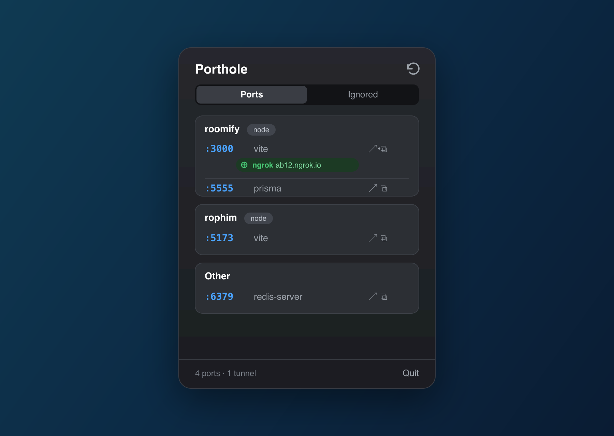

A macOS menu bar app that shows which ports are running, which project owns each one, and which tunnels point where.

Porthole keeps a live, readable list of your local dev world in the menu bar, refreshed while it's open.
Every listening dev port with the process behind it, grouped under the project that owns it, resolved from the process working directory.
ngrok, Cloudflare Tunnel, Tailscale and localtunnel detected automatically, each public URL one click away.
Open localhost:PORT in the browser, copy the URL, or kill the process, straight from the row.
Hide system services like ControlCenter and rapportd by name or port. Seeded with sensible defaults, fully editable.
A real menu bar popover with a smooth open animation. No Dock icon, no background hog.
Just reads lsof / ps and tunnel tools. No kernel extensions, no elevated access.
Porthole shells out to the tools you already trust and turns their output into a clean list. lsof finds listening sockets and each process's directory; tunnels come from the ngrok local API, the cloudflared/lt command lines, ~/.cloudflared/config.yml and tailscale serve status. It's signed with a Developer ID and notarized by Apple.